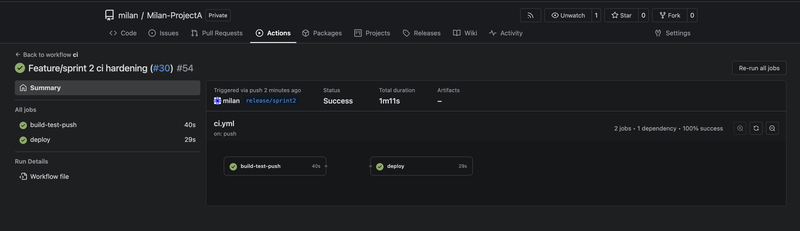
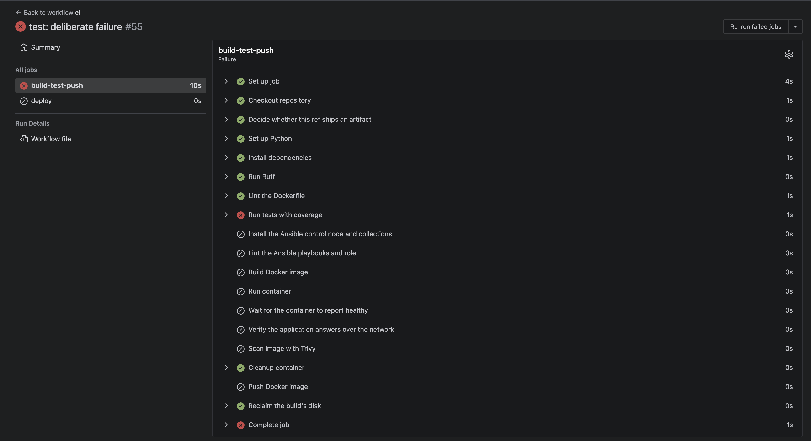
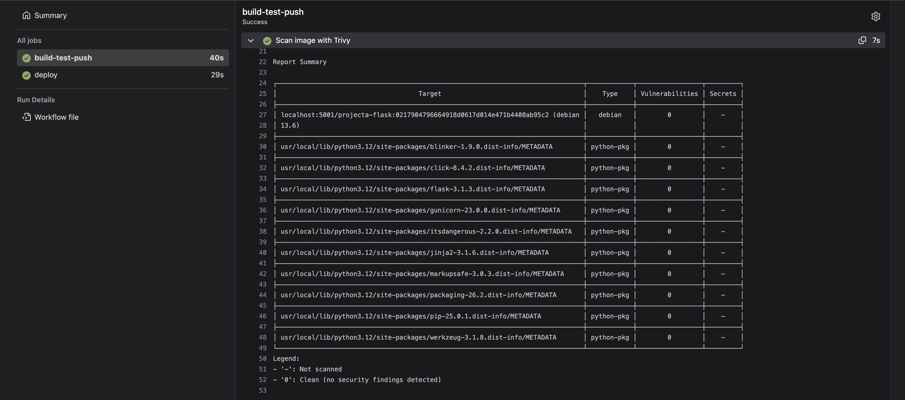
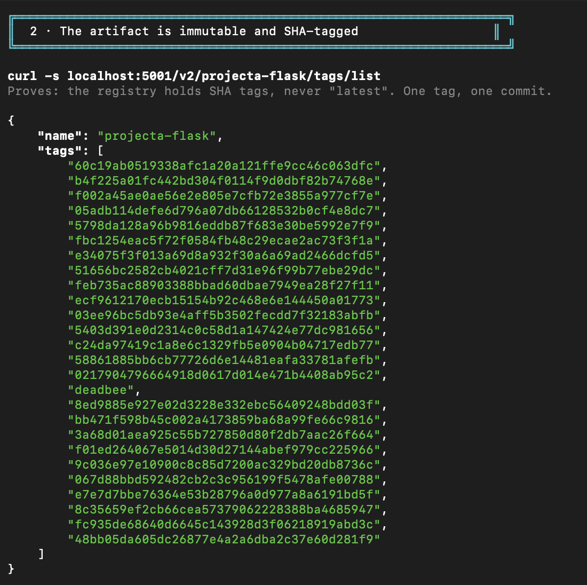
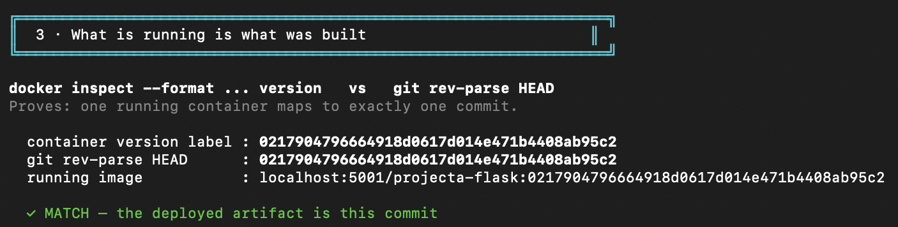
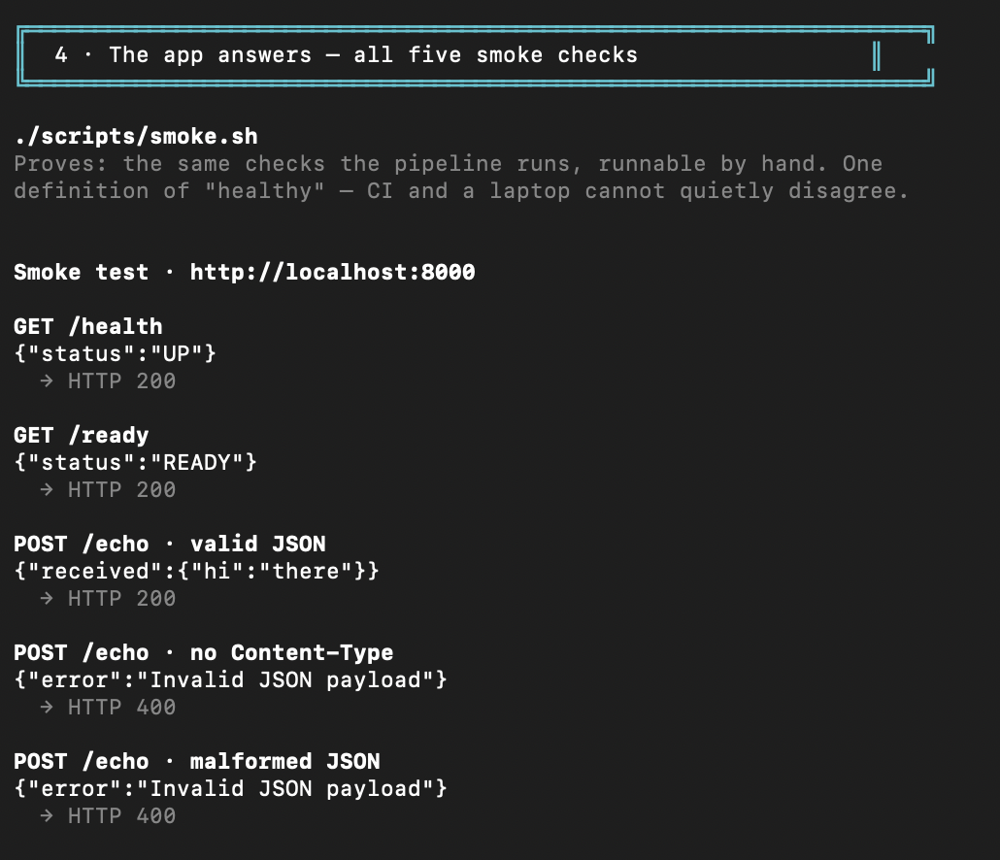
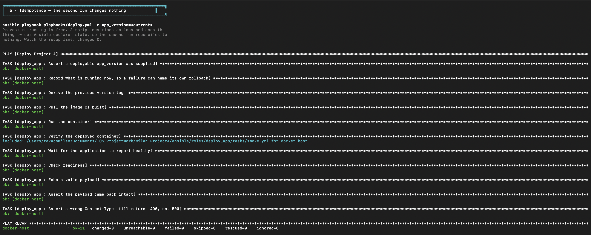
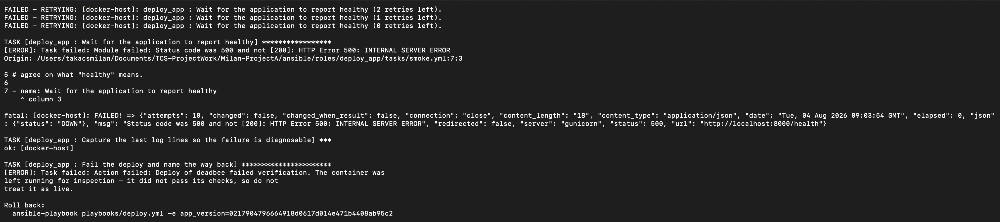
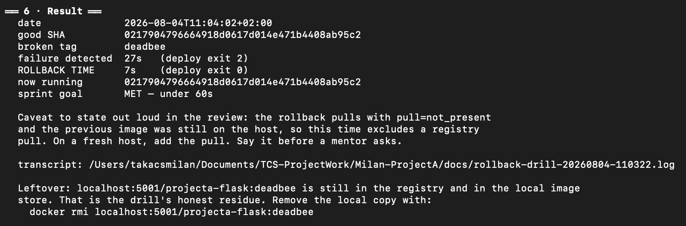

I push code. Something runs.
I don't touch anything in between.
Milán Takács · release/sprint2
Built once. Named after the commit. Never rebuilt.
No Kubernetes anywhere. That's Project C's problem.
Automating a bad artifact just ships it faster.
Cheap opinions first. Expensive ones only if it survives them.

Green. Lint, test, scan, build, push, deploy.
One red gate and everything after it simply doesn't happen.

Red stops everything downstream. No image, no push, no deploy.

Trivy 0.72.0 — fails the build on HIGH or CRITICAL.
I was deploying a different web server than the one every test passed against.

All commit hashes. Except deadbee, which I'll explain shortly.

Container version label = git rev-parse HEAD
docker run finishing means it started. Five checks decide whether it works — and any one of them fails the deploy.
No "succeeded with warnings". That phrase has never helped anybody.

Two of those 400s are supposed to be 400. That one took some explaining.

ok=11 changed=0 — the most satisfying boring output there is.
Rollback is deploy.yml with an older commit. One path, used every single day — so it still works on the day it matters.
Valid hex, so it passes the check. Also unmistakably not a real commit.

Ten retries, then it refuses — and hands me the exact command, hash already filled in.

Same as the run five days ago. Reproducible, not lucky.
to recover
actually down
The container gets swapped before it gets checked — so the broken one served traffic for the 27 seconds the smoke test spent retrying.
Sprint 4 fixes that properly. I didn't tune the retries to flatter the number.
/metrics — needed before any of that works Sprint 3gitleaks hook — nothing stops a secret today the one that bugs meansible-vault — nothing's secret yet decoration, not securitygates, all pinned
components listed
measured, not guessed
Next up: Sprint 3, where I finally get to see what's actually happening.
Every number in here came off a real run this morning.